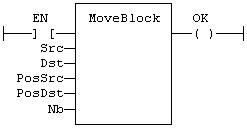

Function
Move/Copy items of an array.
|
Name |
Type |
Description |
|
SRC |
ANY (*) |
Array containing the source of the copy. |
|
DST |
ANY (*) |
Array containing the destination of the copy. |
|
PosSRC |
DINT |
Index of the first character in SRC. |
|
PosDST |
DINT |
Index of the destination in DST. |
|
NB |
DINT |
Number of items to be copied. |
(*) SRC/DST cannot be a STRING.
|
Name |
Type |
Description |
|
OK |
BOOL |
TRUE if successful. |
Arrays of string are not supported by this function.
In LD language, the operation is executed only if the input rung (EN) is TRUE. The function is not available in IL language.
The function copies NB consecutive items starting at the PosSRC index in SRC array to PosDST position in DST array. SRC and DST can be the same array. In that case, the function avoids losing items when source and destination areas overlap.
This function checks array bounds and is always safe. The function returns TRUE if successful. It returns FALSE if input positions and number do not fit the bounds of SRC and DST arrays.
OK := MOVEBLOCK (SRC, DST, PosSRS, PosDST, NB);
The function is executed only if EN is TRUE:
